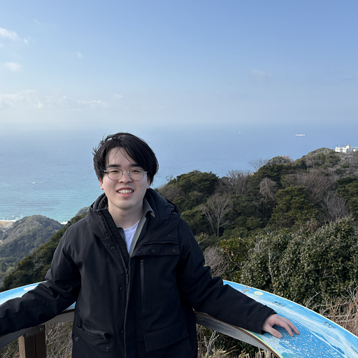

Profile

- 氏名
- 馬場 大誠 (Taisei Baba)
- 所属
- 豊橋技術科学大学大学院 工学研究科 情報・知能工学専攻
- 所属研究室
- 脳神経情報動態研究室(上原研究室) Neural Information Dynamics Lab
- URL: https://sites.google.com/view/ueharalab
- 現在の研究領域
- 脳科学/神経科学/人間情報学/脳波/機能的磁気共鳴画像法(fmri:functional magnetic resonance imaging)/ハイパースキャニング(二者間同時計測)/深層学習